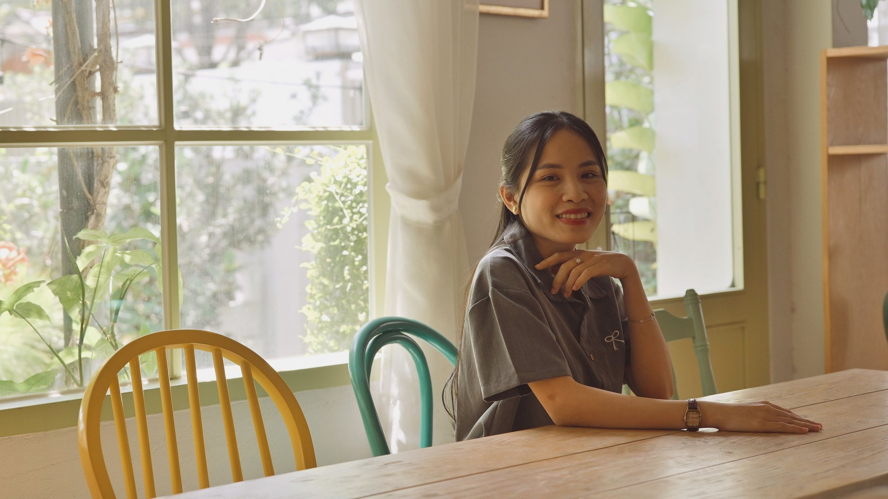
広島市中区・並木通りの矯正歯科
費用も期間も、
初診でお伝えします
当院は大人の矯正治療を中心に行っています。初診相談時に、治療方法ごとの総額・治療期間・通院回数の目安を書面にしてお渡しします。
NEWSお知らせ
- 休診
12月29日（火）から1月3日（日）まで休診します。
- 設備
口腔内スキャナーを導入しました。精密検査で行う歯列のスキャンに使います。
- 診療
月・火・水・金の夕方の初診相談枠を新設しました。
診療時間のご案内
| 診療時間 | 月 | 火 | 水 | 木 | 金 | 土 | 日 |
|---|---|---|---|---|---|---|---|
| 10:00〜13:00 | ● | ● | ● | ― | ● | ● | ― |
| 14:30〜19:00 | ● | ● | ● | ― | ● | 〜17:00 | ― |
最終受付は診療終了の30分前（初診相談は1時間前）です。
お電話082-000-0000
広島電鉄・袋町電停から徒歩6分。
WORRY矯正治療のお悩みとご質問
- 矯正の費用はいくらかかりますか？
- 目立たない矯正装置はありますか？
- 治療期間はどのくらいかかりますか？
- 矯正治療は何歳まで可能ですか？
- 抜歯は必要ですか？
- 初診相談の当日に治療方法や開始時期を決定する必要はありますか？
費用、期間など、気になることはどうぞお気軽にご相談ください。
FEATURES当院の4つの特徴
総額と
治療期間のご提示
当院では、初診相談時に治療費用の総額をお伝えしています。総額には、初診相談から保定中の通院までの費用が含まれます。抜歯費用は含みません。書面には、総額・治療期間・通院回数の目安を記載します。
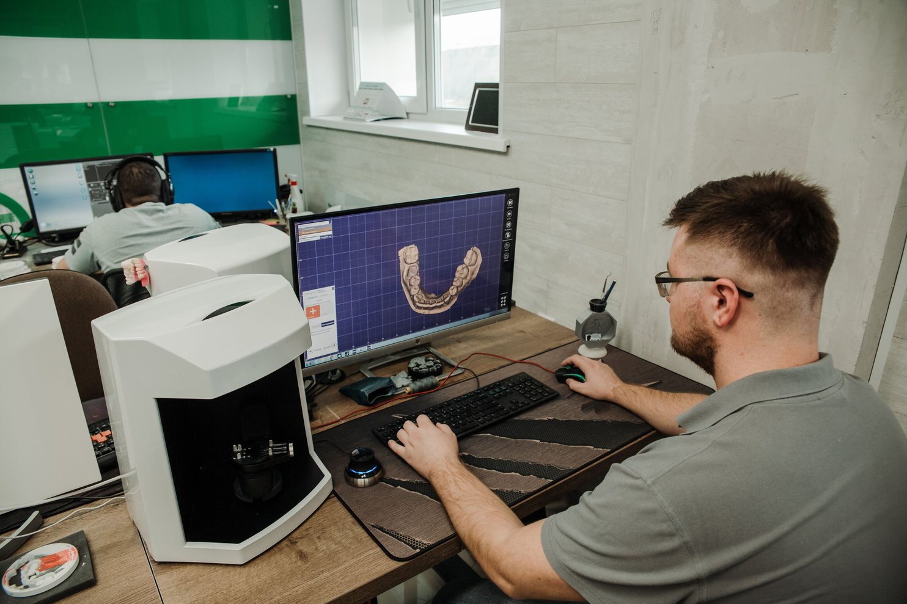
精密検査と
診断
パノラマX線写真・頭部X線規格写真（セファロ）・口腔内写真の撮影と、歯列のスキャンを行います。その後骨格の分析と歯軸の計測を行い、検査結果をもとに診断・治療計画を立てます。抜歯が必要かどうかも、このときに判断します。
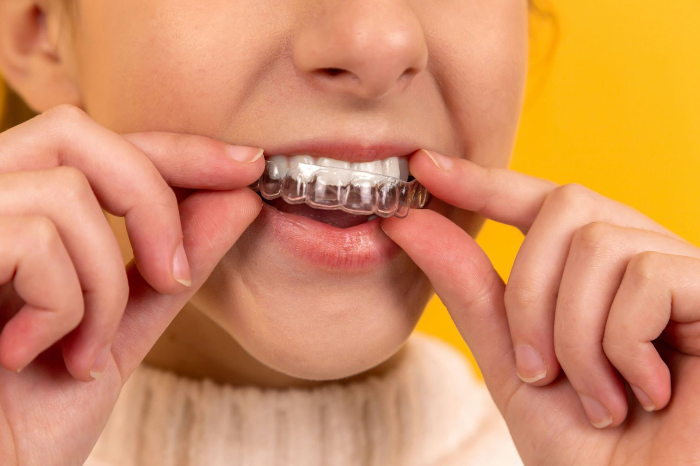
目立ちにくい
装置
表側の装置には、透明なブラケットを使います。裏側の装置は、会話中や笑顔のときでも見えにくいのが特徴です。マウスピース型の装置は透明で、ご自身で取り外しができます。
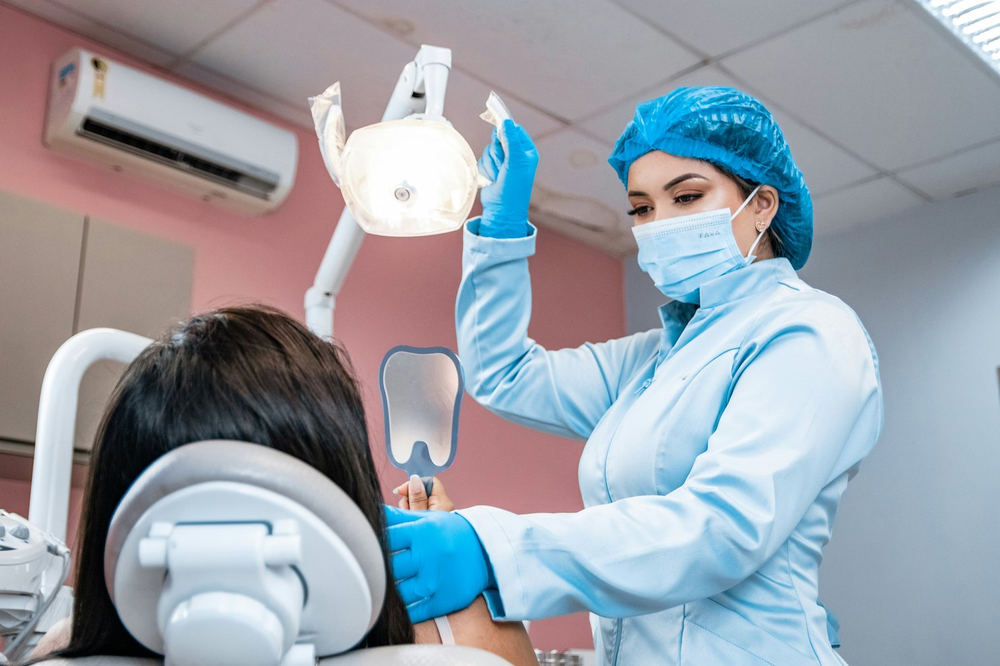
治療中と保定期間中の
定期的なチェック
通院日には、歯が順調に動いているかチェックし、必要な調整を行います。保定期間中は3〜6か月に1度通院していただき、歯並びの状態を確認していきます。
PRICE費用と期間
金額はすべて税込です。矯正治療は原則的には自由診療ですが、下記の場合に限り保険診療の対象となります。
- 厚生労働大臣が定める疾患に起因した咬合異常
- 前歯及び小臼歯の永久歯のうち3歯以上の萌出不全に起因した咬合異常（埋伏歯開窓術を必要とするものに限る）
- 連続した3歯以上の先天性欠如歯に起因した咬合異常（18歳未満に限る）
- 顎変形症（顎離断等の手術を必要とするものに限る）
なお、保険適用される矯正歯科治療を行える医療機関は、厚生労働大臣が定める施設基準に適合しているものとして地方厚生（支）局長に届け出た保険医療機関に限られます。当院はこの届出をしていません。保険の対象になる場合は初診相談でお伝えし、届出をした医療機関をご紹介します。
全体矯正（表側）
歯の表面にブラケットを装着し、ワイヤーの力を利用して歯を動かす矯正方法です。
装置代
770,000円
- 期間
- 1年10か月〜2年9か月
- 通院
- 4週に1回・24〜36回
総額の目安998,800〜1,064,800円
全体矯正（裏側）
歯の裏側に装置を装着するため、正面からは目立ちにくい矯正方法です。
装置代
1,100,000円
- 期間
- 1年10か月〜2年9か月
- 通院
- 4週に1回・24〜36回
総額の目安1,328,800〜1,394,800円
マウスピース型（全体）
取り外しができる透明なマウスピース型の装置を使った矯正方法です。装置は薬機法上の承認を得ていません。
装置代
660,000円
- 期間
- 1年5か月〜3年1か月
- 通院
- 6〜8週に1回・12〜20回
総額の目安822,800〜866,800円
部分矯正（前歯）
前歯の歯並びだけを整える矯正方法です。部分矯正ができるかどうかは、歯科医師がX線撮影などの精密検査をした上で診断します。
装置代
330,000円
- 期間
- 6か月〜1年1か月
- 通院
- 4週に1回・6〜14回
総額の目安459,800〜503,800円
装置代以外の費用
| 初診相談 | 3,300円／60分口腔内の確認と写真の撮影を行います。 |
|---|---|
| 精密検査・診断 | 44,000円／1回パノラマX線写真・セファロ・口腔内写真の撮影と歯列のスキャンを行います。検査結果をもとに治療計画をご説明します。 |
| 調整料 | 5,500円／1回装置をつけている間、通院のたびにいただきます。 |
| 保定装置 | 33,000円／上下1組装置を外したあとの後戻りを防ぐために装着していただきます。 |
| 保定中の通院 | 3,300円／1回通院の間隔は3〜6か月です。 |
総額の目安は、初診相談から保定中の通院までにかかる費用の合計です（保定中の通院5回分を含みます）。保定中の通院の回数は経過によって異なります。抜歯の処置は連携歯科医院で行います。抜歯費用は総額の目安に含みません。1本あたり5,500円から11,000円が目安です。
初診相談料・精密検査料は受診当日にいただきます。装置代・保定装置代の会計は装着の当日に行います。調整料は来院時にいただきます。保定中の通院費も同様です。現金・クレジットカード・デンタルローンをご利用いただけます。
期間と通院回数は、2023年から2025年に当院で治療を終えた112名（表側と裏側64名／マウスピース型31名／部分矯正17名）の実績に基づく範囲です。8割の方が、この範囲で治療を終えました。治療の効果には個人差があります。記載の期間や回数を保証するものではありません。
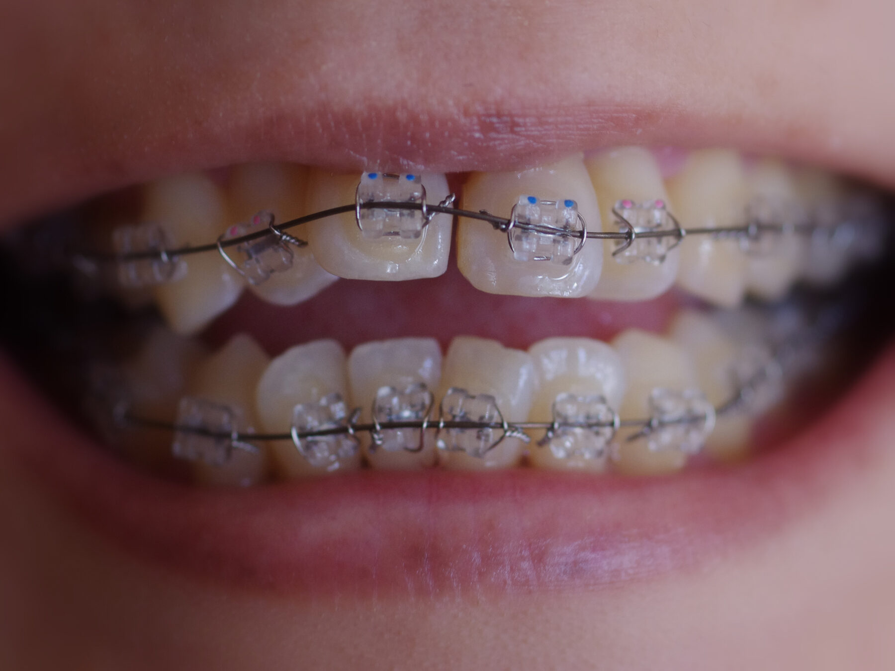
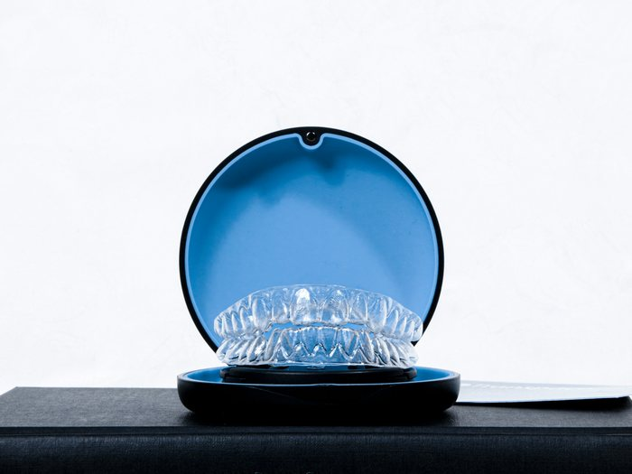
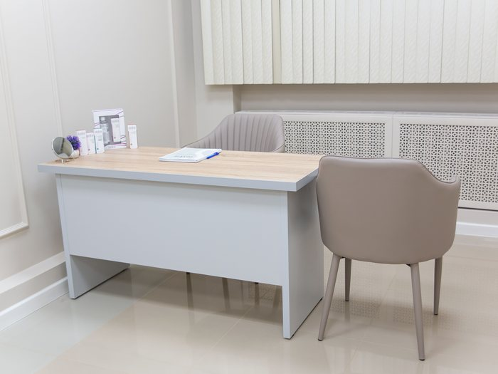
GREETING院長あいさつ
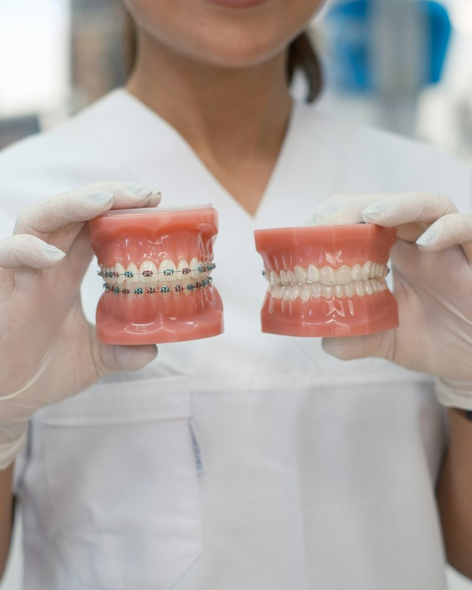
はじめまして。
院長の三好文恵です。
2019年に並木町矯正歯科を開院しました。
治療が進むにつれて、歯の位置は少しずつ変わっていきます。その変化を患者さんと一緒に確かめる時間を、この仕事でいちばん大切にしています。
何年かあとに「始めてよかった」と思っていただけるよう、保定期間中も、通院のたびに歯並びの状態を記録し、装置を外したときの記録と見比べています。
院長三好 文恵
- 2008年3月
- ○○大学歯学部を卒業
- 2009年3月
- ○○大学病院で歯科医師臨床研修を修了
- 2009年4月
- ○○大学病院の矯正歯科に入局
- 2014年4月
- 広島市内の歯科医院に勤務
- 2019年5月
- 並木町矯正歯科を開院
- 2024年4月
- 日本歯科専門医機構認定 矯正歯科専門医の資格を取得
FIRST VISIT初診相談の流れ
- STEP1
カウンセリング
ご相談では、患者さんご自身が気になっていることや、費用・通院についてのご希望をお聞かせください。
- STEP2
口腔内の確認と写真の撮影
お口の中を確認し、歯並びを正面と側面から撮影します。X線写真の撮影は精密検査の日に行います。
- STEP3
治療方法のご説明
確認した歯並びをもとに、考えられる治療方法をご説明します。装置は、精密検査の結果を見てからお選びいただけます。
- STEP4
書面のお渡し
総額・治療期間・通院回数の目安を記載した書面をお渡しします。抜歯が必要な場合の費用と、治療を中止した場合の精算と返金の方法も記載します。
- STEP5
ご自宅でのご検討
書面を持ち帰ってご検討いただけます。精密検査の受診をご希望の場合はお電話でのご予約をお願いいたします。
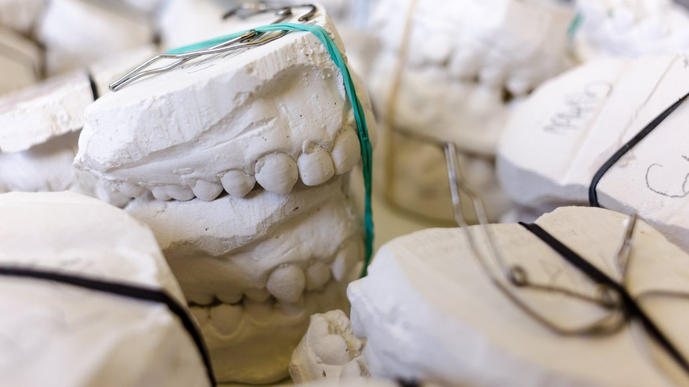
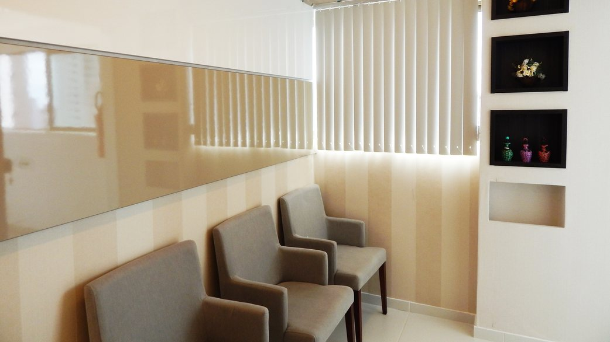
RISK矯正治療のリスクと副作用
治療中のリスクと副作用
- 痛みと違和感
治療中に痛みや違和感が出る場合があります。症状やご希望に応じて痛み止めを処方します。
- 虫歯と歯周病
治療中は、装置で歯が磨きにくくなり、虫歯や歯周病のリスクが高まります。
- 食事と発音
装置の使い始めは、発音や食事がしにくくなることがあります。慣れるまでの期間には個人差があります。裏側の装置は舌が触れやすい位置にあるため、滑舌が悪くなったと感じる可能性があります。
- 金属アレルギー
治療中に金属アレルギーの症状が出る場合があります。
- 誤飲
外れたブラケットを誤って飲み込んでしまう可能性があります。
- 治療計画とのずれ
お口の中の状態によっては、治療計画どおりの結果が得られないことがあります。装置の使用状況、定期的な通院等、患者さんの協力が治療結果や治療期間に影響します。
歯・歯ぐき・顎に関するリスク
- 歯根吸収
歯を動かすことにより歯根が吸収して短くなることがあります。
- 歯肉退縮
歯を移動させた際に、ブラックトライアングル（歯と歯の間の三角形の隙間）や歯肉退縮が起こることがあります。
- 歯髄壊死
ごくまれに、歯の移動中に神経が障害を受けて壊死する場合があります。
- 骨性癒着
ごくまれに、歯が骨と癒着していて動かないことがあります。
- 顎関節症
治療中、顎関節症の症状が出ることがあります。
- 歯やかぶせ物の損傷
装置を外すときに、歯の表面に小さな亀裂が入ったり、かぶせ物の一部が破損したりする可能性があります。
治療後のリスク
- 後戻り
矯正治療終了後、保定装置を指示どおりに装着していただけない場合、後戻りが起こることがあります。保定の期間は2年程度が目安です。
- 歯並びと噛み合わせの変化
治療後に、親知らずの影響で歯並びや噛み合わせが変化する可能性があります。顎の成長が残っている方は、成長に伴って噛み合わせが変わる場合があります。
- 元に戻せないこと
歯を動かし、場合によっては抜歯も行うため、治療前の状態に戻すことはできません。
マウスピース型の装置について
- 未承認の医療機器であること
当院で使用するマウスピース型矯正装置は、医薬品医療機器等法（薬機法）の承認を得ていない医療機器です。
- 入手の経路
製造元より、個人輸入で入手しています。当院の歯科医師が輸入確認証を取得しています。個人輸入の注意点については、以下のページをご覧ください。
厚生労働省「個人輸入において注意すべき医薬品等について」 - 国内の承認品
国内にも、マウスピース型矯正装置として医薬品医療機器等法（薬機法）の承認を得ているものがあります（独立行政法人医薬品医療機器総合機構のウェブサイトで2026年8月に確認）。ご希望があれば、国内で承認された装置を使う場合の費用と期間もお伝えします。
- 国外の承認と安全性
製造元が公表する添付文書と安全性情報（2026年8月確認）によると、本装置は欧州で2018年3月にCEマークを取得し、米国で2019年6月に医療機器として販売認可を受けています。添付文書には、重大な副作用として装置の誤飲と材料に対する過敏症が挙げられています。国外で報告された主な副作用は、歯ぐきの痛みと口内炎です。
- 救済制度の対象外
本装置による健康被害は、医薬品副作用被害救済制度・生物由来製品感染等被害救済制度の対象外です。
FAQよくある質問
矯正治療は何歳まで可能ですか？
矯正治療に年齢制限はありません。2023年から2025年に当院で治療を終えた112名のうち、40歳以上の方は29名です。歯ぐきと歯を支える骨の状態を精密検査で確認したうえで、治療方法をご提案します。
治療を中止した場合、治療費の精算はどうなりますか？
装置をつける前であれば、それまでに受けた初診相談と精密検査の費用のほかはいただきません。装置をつけたあとに中止する場合は、お支払いいただいた装置代を治療の進行状態に応じて精算し、まだ行っていない治療の費用をお返しします。精算と返金の方法は、初診相談の書面に記載されています。
矯正治療中に引っ越した場合、治療は続けられますか？
転居先の矯正歯科をご紹介します。また、紹介状を書いたり、これまでの検査記録を送付したりして、紹介先の医院で治療を続けられるように手続きを行います。装置代は、中止した場合と同じ方法で精算します。
抜歯は必要ですか？
歯並びや顎の状態によっては、歯を並べるスペースを確保するために抜歯が必要なケースがあります。精密検査では、歯の大きさと顎の幅を測定します。抜歯の有無は、精密検査の結果をもとに判断します。2023年から2025年に治療を終えた112名のうち、抜歯をした方は38名です。
矯正の費用は、医療費控除の対象になりますか？
年齢や目的からみて必要と認められる矯正の費用は、医療費控除の対象になります。美容目的の矯正は対象外です。デンタルローンでお支払いの場合は、信販会社が立替払をした金額が、その立替払をした年の医療費控除の対象になります（国税庁タックスアンサーNo.1128、2026年4月1日現在の法令による）。ただし、金利、手数料は医療費控除の対象にはなりませんのでご注意ください。控除の対象になるかどうかの最終判断は税務署が行います。
分割払いはできますか？
提携のデンタルローンをご利用いただけます。分割回数は最大60回、実質年率は4.5%です。ご利用には信販会社の審査があります。たとえば表側の装置代770,000円を60回でお支払いの場合、月々14,356円、支払総額は861,360円（うち手数料91,360円）です。手数料と遅延損害金の率は、信販会社の契約書面に記載されています。
矯正中の食事に制限はありますか？
ブラケットを付けている間は、硬いもの（せんべい、ナッツ類など）や装置にからみやすいもの（キャラメル、ガムなど）は、できるだけ避けてください。マウスピース型の場合は、装置を外して食事していただきます。食後は歯を磨いてから、装置をつけ直していただきます。
装置が外れたときはどうしたらいいですか？
診療時間内にお電話ください。状況を確認して、ご来院の日時をご案内します。外れた装置は、捨てずにお持ちください。痛みが強い場合は急患としてその日のうちに診察します。
ACCESSアクセス
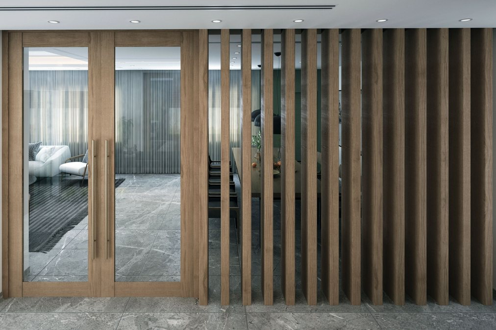
- 所在地
- 広島市中区○○町0-0-0 ○○ビル1階（架空の住所です）
- 路面電車
- 広島電鉄・袋町電停から徒歩6分。当院の向かいは薬局です。
- 駐車場
- ○○パーキングご利用の患者さんには、1時間無料券をお渡しします。
- 設備
- 診療台3台・パノラマ・セファロ撮影装置・口腔内スキャナー
- お電話
- 082-000-0000（診療時間内）